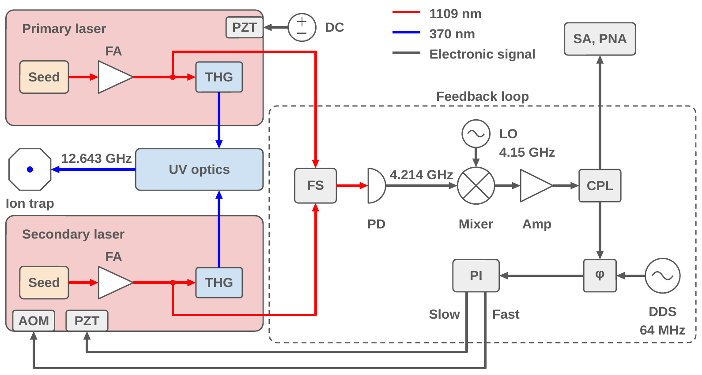

Abstract
- 1SKKU Advanced Institute of Nanotechnology (SAINT), Sungkyunkwan University, Suwon, Gyeonggi, Republic of Korea
- 2Department of Nano Science and Technology, Sungkyunkwan University, Suwon, Gyeonggi, Republic of Korea
- 3Department of Quantum Information Engineering, Sungkyunkwan University, Suwon, Gyeonggi, Republic of Korea
In hyperfine qubits such as 171Yb+, two laser beams that differ in frequency by the qubit splitting drive stimulated Raman transitions, and their beat-note phase sets the phase of each qubit operation. Mode-locked lasers, a common Raman source for 171Yb+, require length-matched beam paths so that their pulses overlap at the ion, whereas continuous-wave (CW) beams do not. In this poster, we present a 171Yb+ Raman source built from two independent CW lasers locked by an optical phase-locked loop (OPLL) (Fig. 1). Two 1109 nm fiber lasers are phase-locked at a 4.214 GHz offset before frequency tripling, so the 370 nm beams differ by the 12.643 GHz qubit frequency. The locked beat note has an in-loop RMS phase error of 78.5 mrad from 1 Hz to 10 MHz. Because the beams are detuned only 0.46 THz from the 2P1/2 level, co-propagating beams with less than 100 μW each drive Rabi oscillations at 35.6 kHz, with a differential light shift of 2.7% of this Rabi frequency. Raman Ramsey interferometry gives a coherence time of 302 ± 58 ms, so the phase relation set at 1109 nm is preserved through tripling and UV delivery for more than 104 Rabi periods. Counter-propagating beams resolve radial motional sidebands and sideband-cool one mode to a mean phonon number of 0.042(9).
